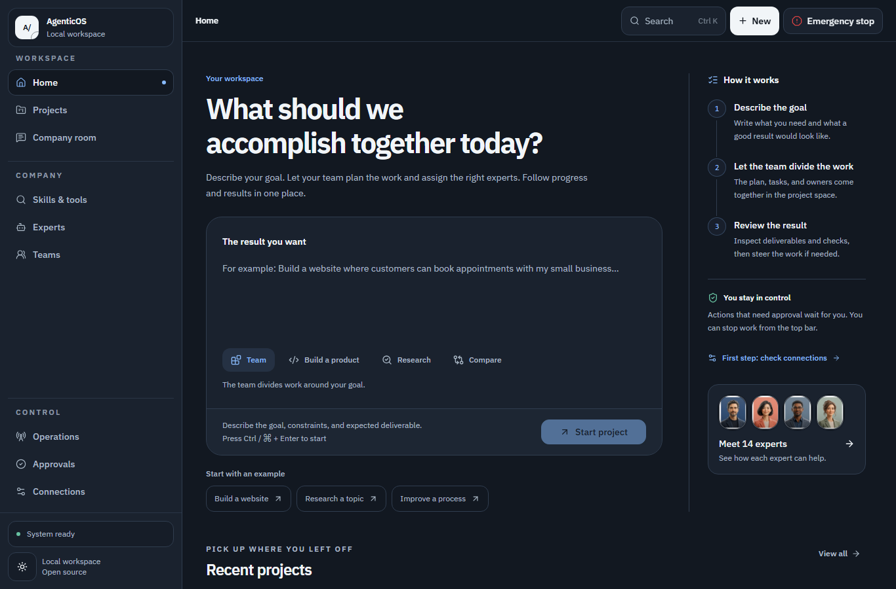

OPEN SOURCE · YOUR OWN WORKSPACE
Give it work.
Keep control.
One task or an ongoing responsibility. Agents work with tools, keep their results, and ask at the boundaries you choose.
Windows, macOS and Linux. Your files, your model account, your rules.

Start small.
Routine work starts economically. Existing agents are reused, and delegation has a server-enforced limit.
Keep a rhythm.
Recurring work waits for its next cycle. Cycle and rolling usage limits stop continued model calls when reported usage reaches the allowance.
See what happened.
Review files, task history, approvals and results. Choose read-only, approval, full-access or custom permissions.
GET STARTED
A workspace of your own.
Use the ready-made container package, or install the source directly on your computer.
Open downloads & release notes ↗-
Prepare your computer
Ready-made package: Node.js 24 and a running Docker Linux engine with Compose v2. No Git, pnpm or source build. Local AI models need additional memory.
-
Open the installer
Extract the setup package. On Windows open START.cmd; on macOS/Linux run sh START.command. Open the private link printed by the launcher.
-
Choose your language and model
Select permissions, tools and your provider. The installer creates the database and verifies the workspace. Save its private installation directory for restart.
YOUR FIRST JOB
Start with a useful result.
Copy an example into your workspace. Replace the details with your own. Nothing runs on this public page.
Know before you start.
Each installation is a single-operator workspace. Cloud model charges belong to your provider account; set a hard spending cap there. Reported usage limits cannot cancel an already running provider request. Local models avoid per-token API charges but use your hardware. Use private HTTPS for phone access. No separate AgenticOS mobile app is needed.